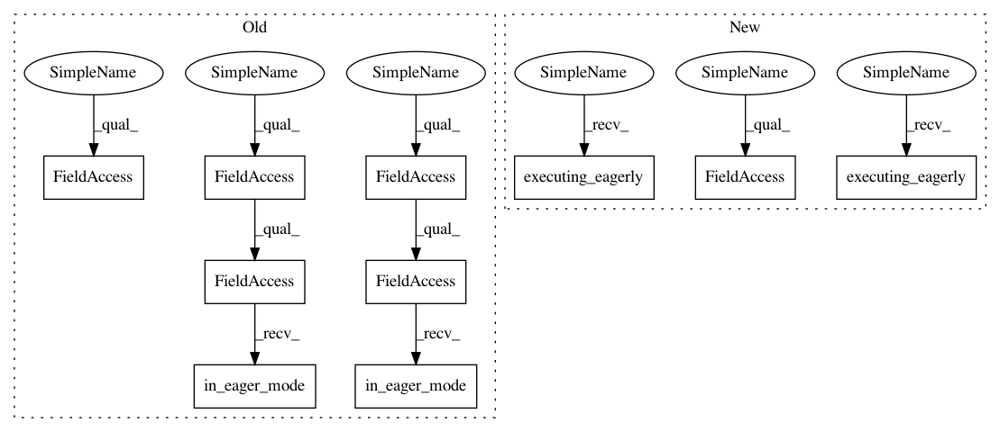

2aa5cccc7c65d14305e60e0a61781aa11cb7142d,deepchem/models/tensorgraph/layers.py,LSTM,create_tensor,#LSTM#Any#Any#,1169
Before Change
if len(inputs) != 1:
raise ValueError("Must have one parent")
parent_tensor = inputs[0]
if tfe.in_eager_mode():
lstm_cell = self._cell
zero_state = self._zero_state
else:
lstm_cell = tf.contrib.rnn.LSTMCell(self.n_hidden)
zero_state = lstm_cell.zero_state(self.batch_size, tf.float32)
if set_tensors:
initial_state = tf.contrib.rnn.LSTMStateTuple(
tf.placeholder(tf.float32, zero_state.c.get_shape()),
tf.placeholder(tf.float32, zero_state.h.get_shape()))
elif "initial_state" in kwargs:
initial_state = kwargs["initial_state"]
else:
initial_state = zero_state
out_tensor, final_state = tf.nn.dynamic_rnn(
lstm_cell, parent_tensor, initial_state=initial_state, scope=self.name)
if set_tensors:
self._record_variable_scope(self.name)
self.out_tensor = out_tensor
self.rnn_initial_states.append(initial_state.c)
self.rnn_initial_states.append(initial_state.h)
self.rnn_final_states.append(final_state.c)
self.rnn_final_states.append(final_state.h)
self.rnn_zero_states.append(
np.zeros(zero_state.c.get_shape(), np.float32))
self.rnn_zero_states.append(
np.zeros(zero_state.h.get_shape(), np.float32))
if tfe.in_eager_mode() and not self._built:
self._built = True
self.variables = self._cell.variables
if tfe.in_eager_mode():
return (out_tensor, final_state)
else:
return out_tensor
After Change
parent_tensor, initial_state=initial_state)
else:
with tf.variable_scope(self.name or "rnn"):
out_tensor, final_state1, final_state2 = tf.keras.layers.RNN(
lstm_cell, return_state=True, return_sequences=True)(
parent_tensor, initial_state=initial_state)
final_state = [final_state1, final_state2]
if set_tensors:
self._record_variable_scope(self.name)
self.out_tensor = out_tensor
self.rnn_initial_states.append(initial_state.c)
self.rnn_initial_states.append(initial_state.h)
self.rnn_final_states.append(final_state.c)
self.rnn_final_states.append(final_state.h)
self.rnn_zero_states.append(
np.zeros(zero_state.c.get_shape(), np.float32))
self.rnn_zero_states.append(
np.zeros(zero_state.h.get_shape(), np.float32))
if tf.executing_eagerly() and not self._built:
self._built = True
self.variables = self._cell.variables
if tf.executing_eagerly():
return (out_tensor, final_state)
else:
return out_tensor
In pattern: SUPERPATTERN
Frequency: 3
Non-data size: 10
Instances
Project Name: deepchem/deepchem
Commit Name: 2aa5cccc7c65d14305e60e0a61781aa11cb7142d
Time: 2019-03-28
Author: peastman@stanford.edu
File Name: deepchem/models/tensorgraph/layers.py
Class Name: LSTM
Method Name: create_tensor
Project Name: deepchem/deepchem
Commit Name: 2aa5cccc7c65d14305e60e0a61781aa11cb7142d
Time: 2019-03-28
Author: peastman@stanford.edu
File Name: deepchem/models/tensorgraph/layers.py
Class Name: GRU
Method Name: create_tensor
Project Name: deepchem/deepchem
Commit Name: 2aa5cccc7c65d14305e60e0a61781aa11cb7142d
Time: 2019-03-28
Author: peastman@stanford.edu
File Name: deepchem/models/tensorgraph/layers.py
Class Name: AtomicConvolution
Method Name: create_tensor